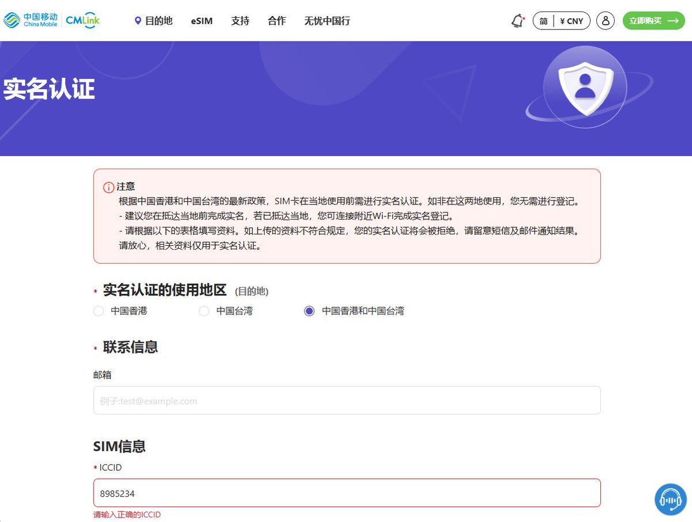

奶昔🥤
@realNyarime
@Sakie174

奶昔🥤
@realNyarime
所有中国移动CMLink（iccid为8985234开头）的卡在中国香港或台湾地区当地使用需实名认证，包括CMLink全球数据卡、Enjoy SIM以及支付宝悠哟哟（yoyoyo）等流量卡。
如果不提前在https://t.co/VnsCssSFFE提交实名认证，那么身处香港和台湾将会有信号没网，详情请参阅香港通讯事务管理局办公室： https://t.co/IGNcDLslkt
咲耳
@Sakie174
@realNyarime 好的，谢谢，所以香港台湾是什么卡都要实名吗